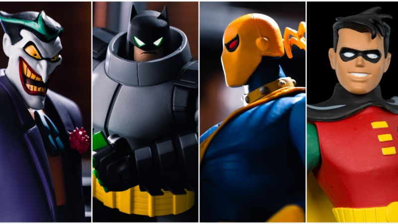

Nostalgia Ride with Batman the Animated Series
Batman has always been my favorite comic book hero and when
I was growing up the 90's, there were two incarnations of him that had a lasting impact on me. First, there were the two
Tim Burton movies, Batman and Batman Returns, which I watched quite a bit at a very young age, especially the latter, although the former has
since become my favorite comic book movie ever; the other was this series, which began airing on Fox when I was five years old. I still have very
dim memories of seeing advertisements of this show when it was about to premiere, which were made up of brief, silhouetted clips of Batman beating up bad guys
and that iconic shot of him standing on top of that building at the end of the opening sequence, as well as a sound clip of him declaring,
"I am Vengeance. I am the Night. I am Batman!"
New Batman Action Figures

DC Direct has unveiled a new wave of figures from "The New Batman Adventures,"
delighting fans with meticulously crafted collectibles. This line features iconic characters such as Joker, Batman (Armored), Robin, and
Deathstroke, each designed with exceptional detail true to the animated series. The Joker captures his menacing grin and playful malevolence,
while Armored Batman showcases a formidable new look. Robin brings youthful energy and agility, and Deathstroke is depicted with his signature weaponry and tactical suit.
These figures are perfect for both collectors and fans, celebrating the enduring legacy of the beloved animated series.